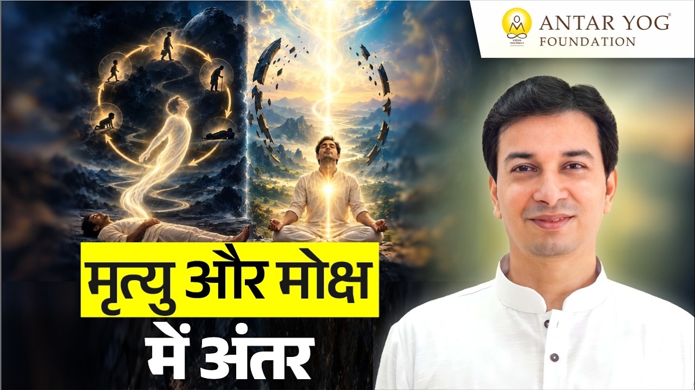
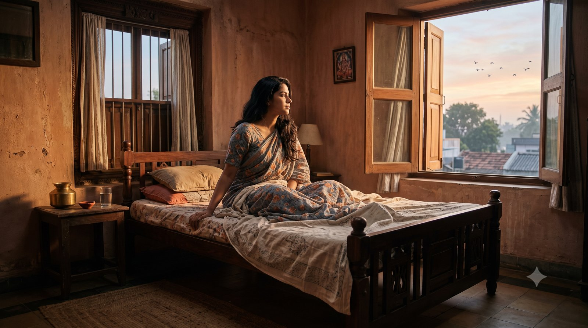

जो स्वयं मुक्त है, वही दूसरे को मोक्ष दिला सकता है। यह बात सुनने में सरल लगती है, पर इसके भीतर एक बड़ा सत्य छिपा है।
बहुत से लोग मानते हैं कि मृत्यु के बाद उनका मोक्ष अपने-आप हो जाएगा। आज इसी भ्रम को समझते हैं, और जानते हैं कि मृत्यु और मोक्ष में वास्तविक अंतर क्या है।
मोक्ष कौन दिला सकता है? केवल वह गुरु जो सच्चे अर्थ में जीवन्मुक्त है, यानी जीते-जी मुक्त। मृत्यु में शरीर छूट जाता है पर मन अपनी वासनाओं और संस्कारों के साथ जीवित रहता है; मोक्ष में शरीर रहता है पर जीना समाप्त हो जाता है। इसलिए मृत्यु के बाद मोक्ष अपने-आप नहीं होता।
पितर: जो यात्रा में अटक गए
पितर बन जाने का अर्थ है अटक जाना। हमारी यात्रा नर से नारायण तक की है, और पितर वे हैं जो इस यात्रा में कहीं बीच में रुक गए।
शास्त्रों में लोकों के सात स्तर बताए गए हैं:
ॐ भूः ॐ भुवः ॐ स्वः ॐ महः ॐ जनः ॐ तपः ॐ सत्यम्
"भूः यह पृथ्वी है, उसके बाद भुवः, फिर स्वर्ग लोक, और ऐसे आगे बढ़ते हुए सत्य लोक, जो अंतिम सोपान है।"
(सप्त व्याहृतियाँ)
पितर भूः और भुवः के बीच ही अटक जाते हैं। उनकी कोई प्रगति नहीं हुई, केवल शरीर छूटा है। वे यहीं भूत के रूप में घूमते हैं और लौटना चाहते हैं, पर अभी शरीर धारण करने योग्य भी नहीं हैं। और वे आपके ही आसपास रहते हैं।
यह कैसे होता है, उन्हें मुक्त करने की इच्छा आपमें क्यों उठती है, उनसे क्या कष्ट होता है और उन्हें कैसे पहचानें, यह सब गीता, गरुड़ पुराण और कठोपनिषद जैसे शास्त्रों से सीखा जाएगा। अभी इतना स्पष्ट है: पितर मुक्त नहीं हुए, इसीलिए समस्या है।
मोक्ष का अर्थ: मोह का क्षय
अब पितरों को छोड़कर अपनी बात करें। यह जन्म मुक्त होने के लिए ही मिला है।
धर्म, अर्थ, काम और मोक्ष, ये चार पुरुषार्थ (जीवन के चार लक्ष्य) हैं। मोक्ष का अर्थ है मोह का क्षय: मोह + क्ष।
"मुझे मोक्ष चाहिए", पर उससे पहले?
लोग बड़ी बातें करते हैं: मुझे मोक्ष चाहिए। पूछो कि उससे पहले क्या चाहिए, तो पूरी सूची निकल आती है: विवाह करना है, एमबीए करना है, इस रोग से छुटकारा चाहिए।
आचार्य जी कहते हैं कि गुरु के पास आकर भी व्यक्ति झूठ बोलता है, और जब तक ऐसा है, तब तक वैसे भी उसका मोक्ष होने वाला नहीं है।
क्या आपकी "मोक्ष" की इच्छा के पीछे भी इच्छाओं की कोई लंबी सूची खड़ी है?
"मरूँगा तो छूट जाऊँगा", सबसे बड़ा भ्रम
कुछ लोग कहते हैं, एक बार मर जाऊँ तो छूट जाऊँगा। ऐसा कहने वाला कदापि नहीं छूटेगा, पच्चीस जन्मों में भी नहीं, क्योंकि उसका संस्कार ही उल्टा है।
मृत्यु क्या है?
हमारे पास एक शरीर है और एक मन है। मरने पर शरीर यहीं रहता है और जो बाहर जाता है, वह आपका मन ही है, अपनी वासनाओं और संस्कारों के साथ।
आत्म-तत्त्व तो सर्वत्र है। मन और आत्मा के संयोग को जीवात्मा कहते हैं।
आचार्य जी समझाते हैं कि शरीर तो चला गया, पर जीना रह गया। यही मृत्यु है: शरीर छूट गया, पर मन अब भी जीवित है।
मोक्ष क्या है?
जीवन्मुक्त (जो जीते-जी मुक्त है) व्यक्ति का शरीर तो रहता है, पर जीना समाप्त हो जाता है। इच्छा, वासना, कोई समस्या शेष नहीं रहती। इसी अवस्था को मोक्ष या मुक्ति कहते हैं।
इसलिए "मरने के बाद मोक्ष" की धारणा ही गलत है। यदि शास्त्र मृत्यु और मोक्ष की ये दो परिभाषाएँ देते हैं, तो मोक्ष मृत्यु के बाद की घटना हो ही नहीं सकती।
क्या आपका शरीर ही जी रहा है, या आपका मन भी अब तक "जीने" में उलझा है?
क्या कोई भी पूर्वजों को मुक्त कर सकता है?
हम कहते हैं कि अपने गए हुए लोगों को मैं मुक्त करूँगा। पर क्या यह सामान्य मनुष्य के बस की बात है? नहीं।
त्र्यंबकेश्वर या गया जाकर कोई स्थानीय पंडित जी चार श्लोक बोल दें और कौवा पिंड पर चोंच लगा दे, इतनी आसानी से यह नहीं होता। यदि होता, तो हमारे देश में कोई समस्या ही न रहती।
मोक्ष कौन दिला सकता है?
जो सच्चे अर्थ में जीवन्मुक्त है, मोक्ष या कैवल्य (पूर्ण मुक्ति) की अवस्था में है, ऐसा एकमात्र गुरु ही किसी को मरने के बाद भी और जीते-जी भी मुक्ति दिला सकता है।
जो स्वयं मुक्त है, वही दूसरे को मोक्ष दिला सकता है। जो खुद ही बंधन में है, वह दूसरे को बंधन से क्या छुड़ाएगा?
जिसने वह संसार देखा है, वही आपको वह संसार दिखा सकता है। जिसे स्वयं मृत्यु का भय है, जिसे अपनी नौकरी की चिंता है, जिसे आपकी दक्षिणा की चिंता है, वह आपको या आपके पूर्वजों को क्या मुक्त करेगा?
मुख्य बातें
- पितर वे जीव हैं जो नर से नारायण की यात्रा में भूः और भुवः लोक के बीच अटक गए हैं।
- मोक्ष का अर्थ है मोह का क्षय।
- मृत्यु: शरीर चला गया, पर जीना (मन, वासना, संस्कार) रह गया।
- मोक्ष: शरीर रह गया, पर जीना समाप्त हो गया। यही जीवन्मुक्ति है।
- "मरने के बाद मोक्ष" की धारणा गलत है; उल्टे संस्कार वाला पच्चीस जन्मों में भी नहीं छूटता।
- पूर्वजों की मुक्ति कोई सरल कर्मकांड नहीं; केवल वह गुरु मुक्ति दिला सकता है जो स्वयं मुक्त है।

आगे पढ़ें

पितृ पक्ष आते ही कई प्रश्न मन में उठते हैं। पितर कौन हैं? श्राद्ध (श्रद्धा से किया गया पूर्वजों का स्मरण) और तर्पण (जल अर्पण) का वास्तविक अर्थ क्या…

हम में से बहुत लोग मानते आए हैं कि मोक्ष (liberation) कुछ ऐसा है जो मृत्यु के बाद मिलता है। पूरा जीवन बीत जाए, फिर शरीर छूटे, तब कहीं जाकर मुक्ति।

हम रोज़ किसी न किसी की मृत्यु की ख़बर सुनते हैं। पर क्या कभी रुककर सोचा है कि यह ख़बर एक दिन हमारी भी होगी?